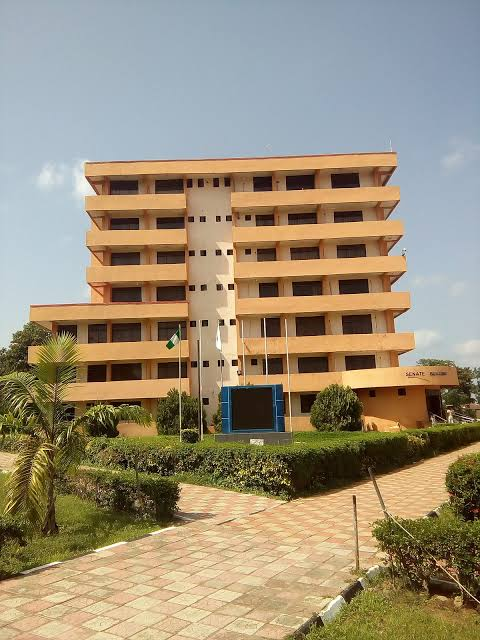

PIONEERING ACADEMIC STABILITY AND EXCELLENCE
APPLICATION FORM FOR 2022/2023 JUPEB PROGRAMME IS ON NOW,
NEWS
Host communities
We'll always support our host communities-VC. The Vice-chancellor of the University of ilorin, Prof. Sulyman Age

JUPEB
JUPEB:Monitor your wards, Abdulkareem tasks parents.The vice-chancellor of the university of ilorin, Prof. Sulyman

Sakakawa Admission
ADVERTISEMENT FOR ADMISSION INTO SAKAKAWA AFRICA FUND FOR EXTENSION EDUCATION(SAFE) B.sc AGRICULTURAL EXTENSION AND
Our other courses
since 1975
Better by far
school of PreliminaryStudies(FuFu Campus)
since 1975
Better by far
JUPEB
since 1975
Better by far
Universiy Veterinary teaching Hospital
Some of Our Top Courses
There are over Two Hundred Courses being offered in University of Ilorin
AGRICULTURE
- Agricultural economics
- Agricultural Extension
- Food sciences
- Agronomy
ENGINEERING
- Computer Engineering
- Civil Engineering
- Chemical Engineering
- Electrical Engineering
LIFE SCIENCE
- optometry annd vision science
- Zoology
- Plant Biology
- Microbiolgy
ARTS
- Arabic
- English
- French
- Religion
IMPORANTDATES
December 13, 2021
Continous Assessment
january 14, 2022
End of Ran SEmester Lectures
January 17, 2022
Lecture free week for Revision
February 11, 2022
End of Rain semester Examinations
January 24 , 2022
Commencement of Rain Semester Examination
Experience in Unilorin
since 1975
Better by far
Contact Us
- P.M.B. 1515, Ilorin, Nigeria
- +234816-912-2739, +234807-200-0013
- registrar@unilorin.edu.ng
- talk2@vcoffice@unilorin.edu.ng
Useful Links
- Academic Calendar
- Leadership
- Career
- News and Events
Useful links
- Publications
- Feedback Form
- Sitemap
- Health and Safety
Bulletin
- Unilorin Bulletin !9th September, 2022
- Unilorin Bulletin 12th september, 2022
- Unilorin Bulletin %th Sptember, 2022
- Unilorin Bulletin 29th August, 2022
- See all
Connect with Us